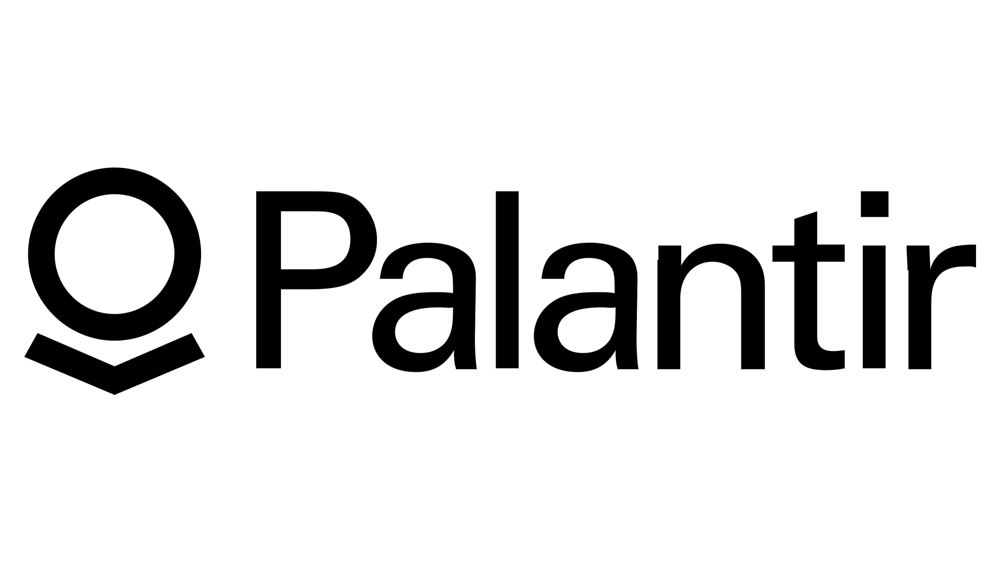
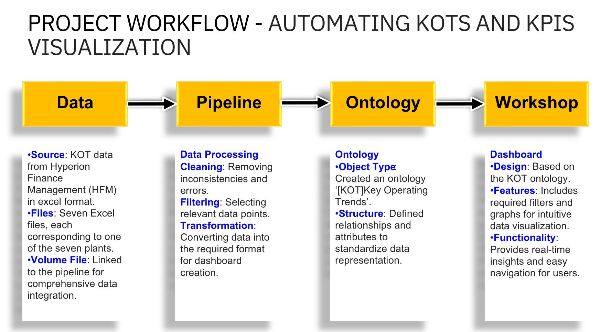
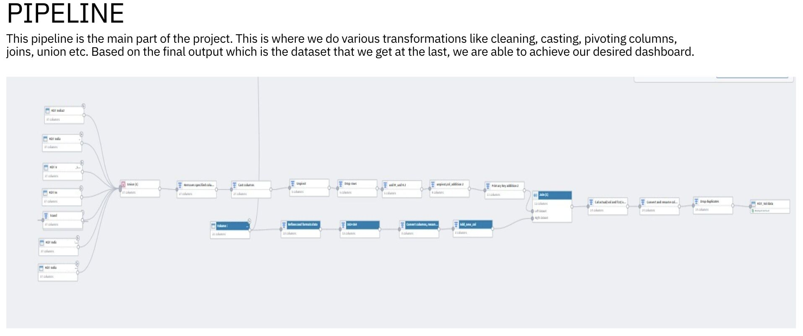
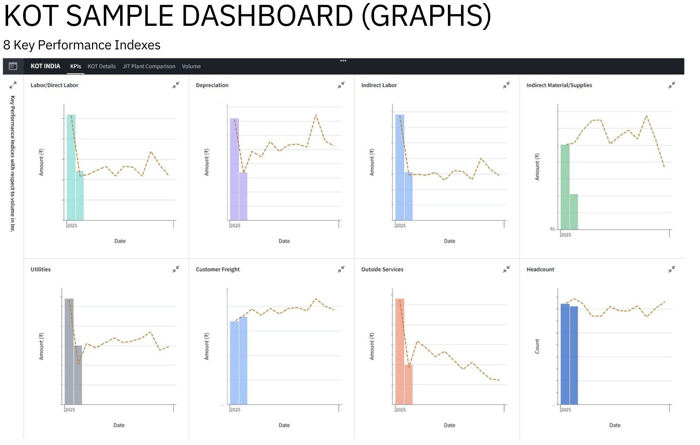
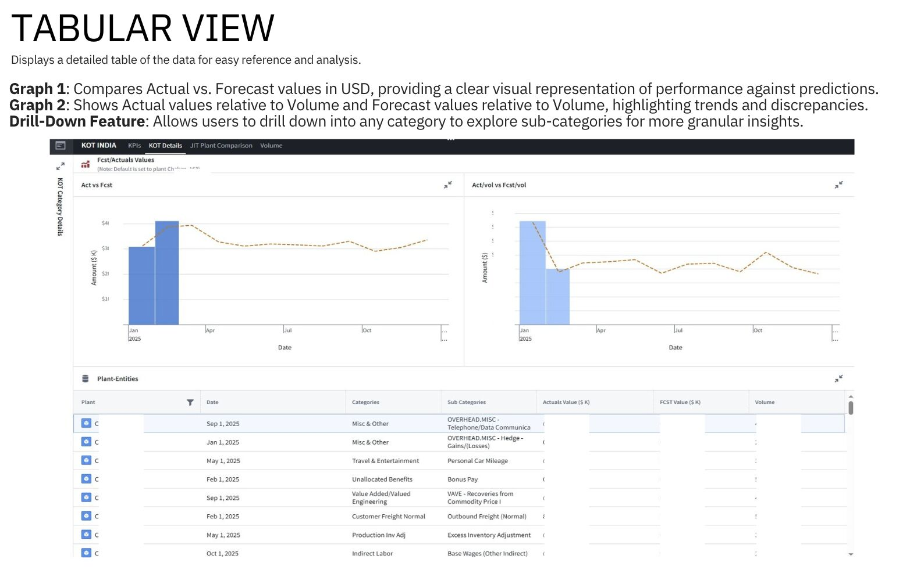
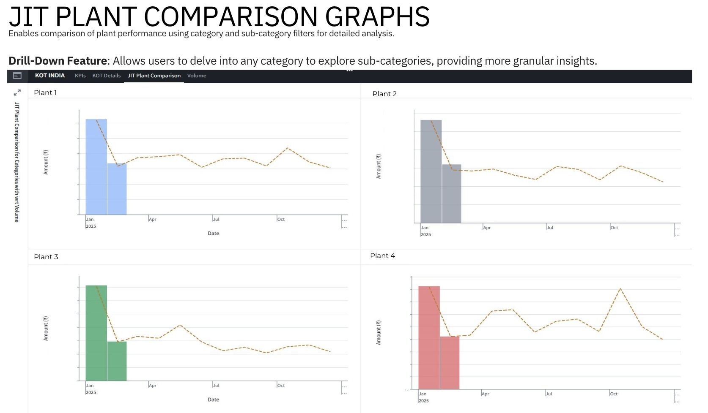
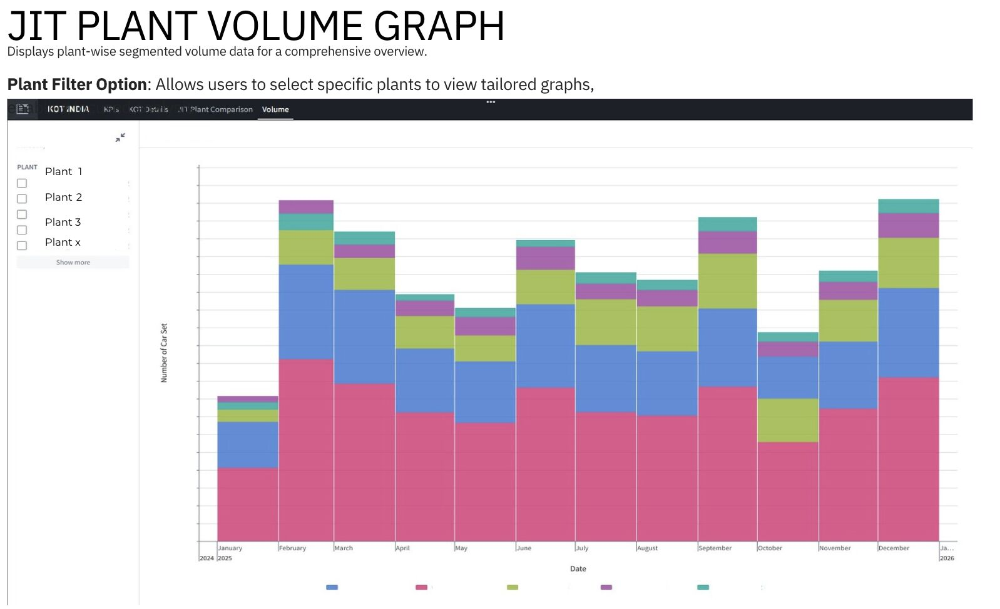

The platform

Palantir Foundry connects data integration, modelling, analytics, and business applications in one platform. Organisations use it across manufacturing, supply chains, and healthcare to turn disconnected data into information teams can act on.
I used Pipeline Builder to prepare and combine plant data, Ontology to create a shared business model, and Workshop to build interactive dashboards.
What I did
- Automated monthly reporting: Built reusable ETL pipelines to extract, clean, transform, and combine plant reporting files and production volumes. This replaced repeated Excel work in a process that previously took 2–3 working days per month, with an estimated 85% reduction in manual reporting effort.
- Brought plant reporting into a common structure: Standardised reporting files containing approximately 660 columns, creating a consistent foundation for calculations and comparisons across seven plants.
- Made performance easier to explore: Developed interactive dashboards covering 33 Key Operating Trends and eight KPIs, including actual-versus-forecast comparisons, cost trends, and plant volumes.
- Turned reporting needs into a working solution: Worked with Continuous Improvement stakeholders to understand their questions, validate calculations, and check dashboard outputs against source data.
What I enjoyed the most?
For me, the most satisfying part was how quickly I could learn Palantir Foundry and put it to use on a real business problem. Understanding what the team needed, then bringing automation and analysis together to make their monthly work easier, made the experience especially rewarding.
Project snapshots


Enlarge ↗

Enlarge ↗

Enlarge ↗

Enlarge ↗

Enlarge ↗

Enlarge ↗